Don't just serve — steer.
A working model is the easy part. Turning it into a low-latency, high-throughput product means shaping its output, measuring it honestly, and keeping the GPUs warm. We'll build the whole picture from one running example.
One sentence becomes a guided journey
Everything below is anchored to a single concrete product: an ERP chatbot that lets a user create a purchase order by talking to it instead of clicking through twelve screens.
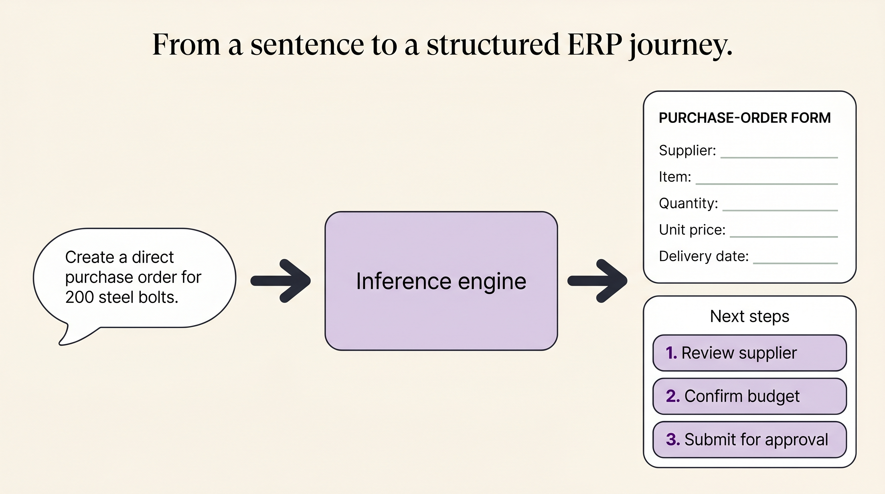
Notice what the product actually demands. It is not “produce some helpful text.” It is:
- render a form with exactly these fields, in a shape the UI can bind to;
- then emit “here's what you do next” steps, in order, every time;
- and do it fast enough that the chat feels alive.
So our job splits cleanly into three pressures, and the tutorial follows them in order: shape the output (§1), measure that you did (§2), and serve it fast and keep it up (§3–§4). §5 ties the whole stack together.
Underneath, we've already implemented the parallelism that gets tokens out the door — data parallelism (DP) to handle many users at once and tensor parallelism (TP) to split a layer across GPUs. Those buy throughput. They do nothing to guarantee the output is a valid purchase-order form. That guarantee is a separate engineering problem — and it's where we start.
Forcing the model to emit valid structure
A free-running LLM samples the next token from a probability distribution over the whole vocabulary. Left alone, it will occasionally produce "quantitiy": 200,, — and your UI breaks. Steering means making invalid tokens impossible, not merely unlikely.
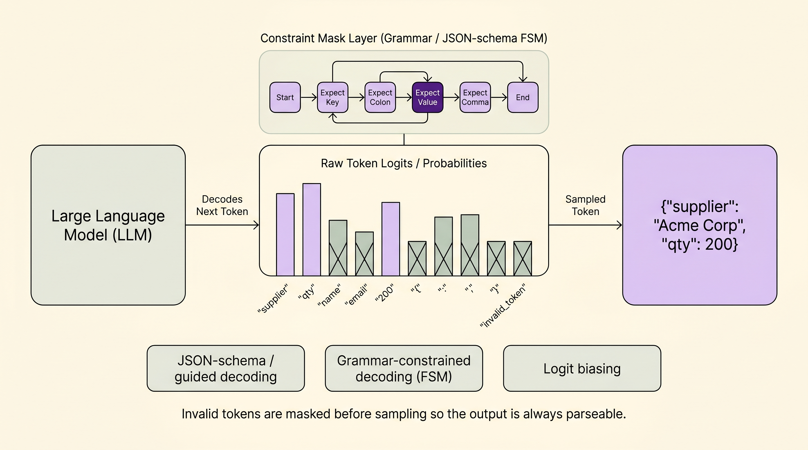
There are three techniques worth teaching, from softest to hardest guarantee.
Logit biasing
Add or subtract a constant from specific tokens' logits before sampling. Push "USD", "EUR", "INR" up and everything else down when you're decoding the currency field; ban the <newline> token mid-value. Cheap, blunt, and it only nudges probabilities — it can't guarantee validity on its own.
Grammar / guided decoding
Compile a formal grammar (a regex or context-free grammar) into a finite-state machine. At each step the FSM says which tokens are even reachable; the rest are masked to −∞. After "qty": only digit tokens survive. This is what forces well-formed structure.
JSON-schema decoding
The everyday version of guided decoding: hand the engine a JSON Schema for the purchase order and it constrains generation to emit exactly that object — right keys, right types, required fields present. vLLM, Outlines, and XGrammar all do this. Your form contract becomes the decoding constraint.
What it looks like in practice
The schema is the form. You write it once and it does double duty: it documents the contract and it drives the decoder.
# The purchase-order contract — also the decoding constraint po_schema = { "type": "object", "properties": { "supplier": {"type": "string"}, "item": {"type": "string"}, "quantity": {"type": "integer", "minimum": 1}, "currency": {"enum": ["USD", "EUR", "INR"]}, # enum ⇒ only 3 legal continuations "delivery_date": {"type": "string", "format": "date"} }, "required": ["supplier", "item", "quantity"], "additionalProperties": False } # vLLM: pass the schema as a guided-decoding constraint out = llm.generate(prompt, guided_decoding=GuidedDecodingParams(json=po_schema)) # 'out' is now guaranteed to parse as a PO object. No try/except JSON soup.
Constrained decoding isn't free: the FSM must compute a token mask at every step, which can add latency, and an over-tight grammar can force the model into a bad-but-valid answer (it will happily emit "quantity": 1 just to stay legal). Rule of thumb: constrain the structure, not the judgement. Force the shape of the form; let the model choose the values — then catch bad values with evals (§2) and guardrails (§4).
Nothing works without an eval harness
You cannot improve what you can't measure, and “it looked right when I tried it” is not measurement. Before deployment you need a ground-truth dataset from the team you're building for and an automated harness that scores the model against it — at the field level.
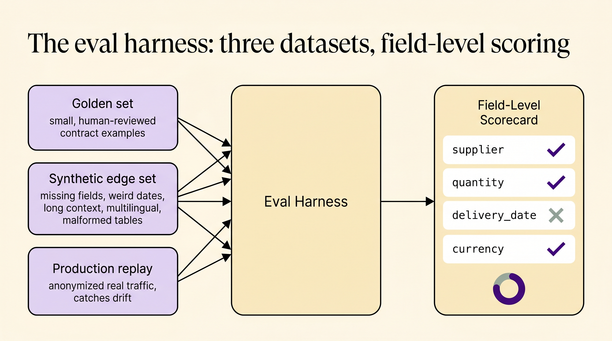
Three datasets, three jobs
Golden set
Small, human-reviewed examples that represent the product's contract. “Create a PO for 200 steel bolts from Acme, deliver June 30” → the exact expected JSON. This is where exact field-level checks belong. Curated by the ERP team, not invented by you.
Synthetic edge set
Generated adversarial variants: missing fields, weird dates (“next Tuesday”, “30 Feb”), long contexts, multilingual text, malformed tables pasted from email. These are the inputs handcrafted tests forget — so you generate them on purpose.
Production replay
Anonymized traffic samples replayed through new model versions. This is the only set that catches distribution drift — the way real users phrase requests slowly diverges from anything you imagined. Grows itself over time.
What “field-level check” actually means
A single pass/fail on the whole blob hides everything. Score each field, then aggregate. For our PO:
| Field | Expected | Model output | Check | Result |
|---|---|---|---|---|
| supplier | Acme Steel | Acme Steel | exact / normalized | ✅ pass |
| item | steel bolts | steel bolts | exact | ✅ pass |
| quantity | 200 | 200 | numeric equal | ✅ pass |
| delivery_date | 2026-06-30 | 2026-06-03 | ISO date equal | ❌ fail |
| currency | USD | USD | enum | ✅ pass |
That one failing row — a date the model misparsed — is invisible in a holistic score but obvious here, and it tells you exactly what to fix. A useful harness reports: schema-valid % (did it even parse?), per-field accuracy, and full-record exact-match %.
# The harness is boring on purpose — boring is auditable def score(example, model_out): valid = matches_schema(model_out, po_schema) # did it parse at all? fields = {k: (model_out.get(k) == example.expected[k]) for k in example.expected} # field-by-field return {"schema_valid": valid, "fields": fields, "exact_match": valid and all(fields.values())} # Run it on every dataset, gate deploys on the aggregate (see §4 canary) report = run_harness(model, golden + synthetic_edges + prod_replay) assert report.schema_valid_pct > 0.99 # structure is non-negotiable assert report.field_acc["delivery_date"] > 0.95
The harness is what makes every later decision safe. Canary promotion (§4) is just “did the eval score hold on live traffic?” A new quantization (§5) is only allowed if the harness says field accuracy didn't drop. Without it, every change is a guess.
Know where the milliseconds go
For a chatbot, two numbers decide whether it feels alive: time to first token (TTFT) — how long until something appears — and inter-token latency (TPOT) — how smoothly the rest streams. You profile to learn which one you're bleeding on.
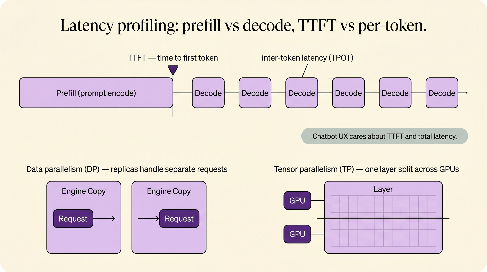
The two phases have opposite bottlenecks
| Phase | What happens | Bound by | What helps |
|---|---|---|---|
| Prefill | All prompt tokens processed in parallel → KV cache + first token | Compute (FLOPs) | Tensor parallelism, FlashAttention, fewer prompt tokens, prefix-cache reuse (§4) |
| Decode | One token per step, re-reading the whole KV cache each time | Memory bandwidth | Bigger batches (amortize weight reads), quantization, speculative decoding, GQA/MQA/MLA (§5) |
Our existing DP and TP map onto this directly:
Data parallelism (DP)
Full model replicated N times; each replica serves different requests. More replicas → more concurrent users → higher throughput. Doesn't speed up a single request.
Tensor parallelism (TP)
One layer's matrices split across GPUs that work on the same request together. Shrinks per-token latency and lets a model too big for one GPU fit — at the cost of inter-GPU communication every layer.
Measure TTFT and TPOT separately under realistic concurrency. If TTFT is your pain, attack prefill — cache the shared system-prompt prefix, trim the prompt, add TP. If TPOT is your pain, attack decode — raise batch size, quantize, add speculative decoding. The fixes live in different layers, so the diagnosis has to come first.
The model still isn't ready
It generates valid forms, it passes the harness, you've profiled it. It is still not production. Five concerns stand between a good model and a good service: cold starts, canary deploys, cache-aware routing, batch vs online, and guardrails.
Cold starts & keeping things warm
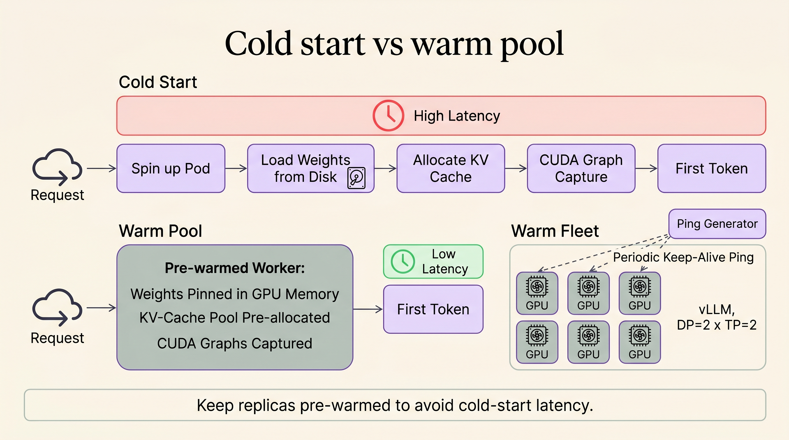
Assume our serving config is vLLM with DP=2 × TP=2 — four GPUs, two replicas, each replica sharded across two cards. A cold request to a freshly scheduled pod walks the whole staircase:
- Pod / container schedulingKubernetes finds a node with 2 free GPUs.
- Load weights from disk → GPUTens of GB copied into VRAM. The dominant cost — often tens of seconds.
- Allocate the paged KV-cache poolvLLM reserves GPU memory blocks for attention state.
- CUDA-graph capture / warm-up passFirst few kernels are slow until graphs are captured and caches primed.
- First tokenOnly now does the user get a reply.
The fix is to never let the user hit a cold worker:
- Keep a warm pool. Hold N replicas already loaded and pinned in GPU memory, weights resident, KV pool allocated, CUDA graphs captured.
- Set
min_replicas ≥ 1(never scale to zero) for interactive traffic; scale-to-zero is for batch jobs that can wait. - Keep-alive pings. A periodic synthetic request stops the OS/GPU from paging things out and keeps caches hot.
- Snapshot / fast-load weights (safetensors mmap, model caching on the node) so a new replica warms in seconds, not minutes.
- Pre-scale ahead of demand — spin up replicas before the morning traffic wave, not after latency already spiked.
Canary deployments
Where the name comes from. Coal miners carried a canary in a cage underground. The bird is more sensitive to toxic gas than humans — if it stopped singing, you evacuated before the gas reached you. A canary deployment is the same idea: expose a tiny, sacrificial slice of real traffic to the new model and watch it closely, so a bad release hurts 5% of requests instead of 100%.
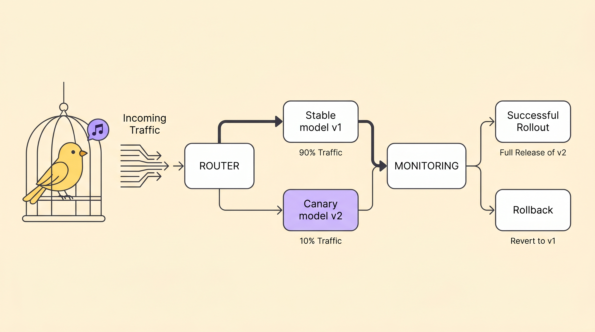
This is exactly where §2's harness pays off: the canary's gate isn't vibes, it's “did the eval metrics hold on real traffic?” A typical ramp: 1% → 5% → 25% → 100%, pausing at each step to confirm the gate stays green.
Cache-aware routing
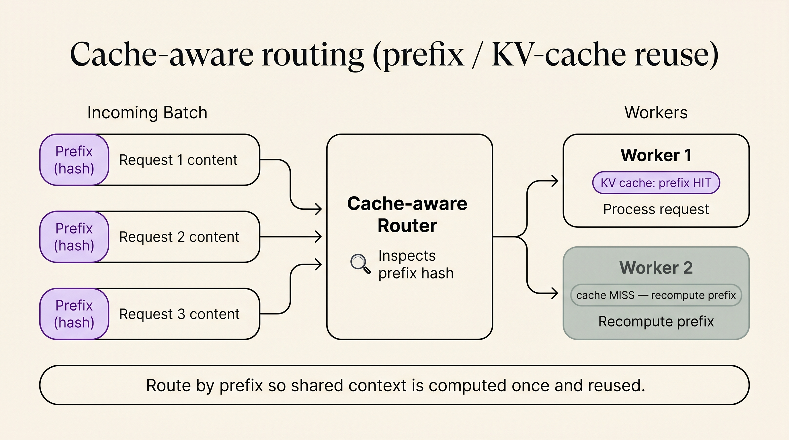
In our chatbot, the first ~1–2k tokens of every request are identical: the system prompt, the PO tool schema, the few-shot examples. Recomputing that prefix for every message is pure waste. Two complementary moves:
- Prefix / KV caching (automatic in vLLM): the engine stores the KV cache for a prefix and reuses it for any request that shares it — slashing prefill cost and TTFT.
- Cache-aware routing: a naïve round-robin load balancer scatters requests randomly and destroys cache locality. A prefix-aware router instead sends requests with the same prefix to the same replica, turning misses into hits. The same logic applies to session affinity — keep one user's multi-turn conversation pinned to the worker that already has their history cached.
Batch vs online inference
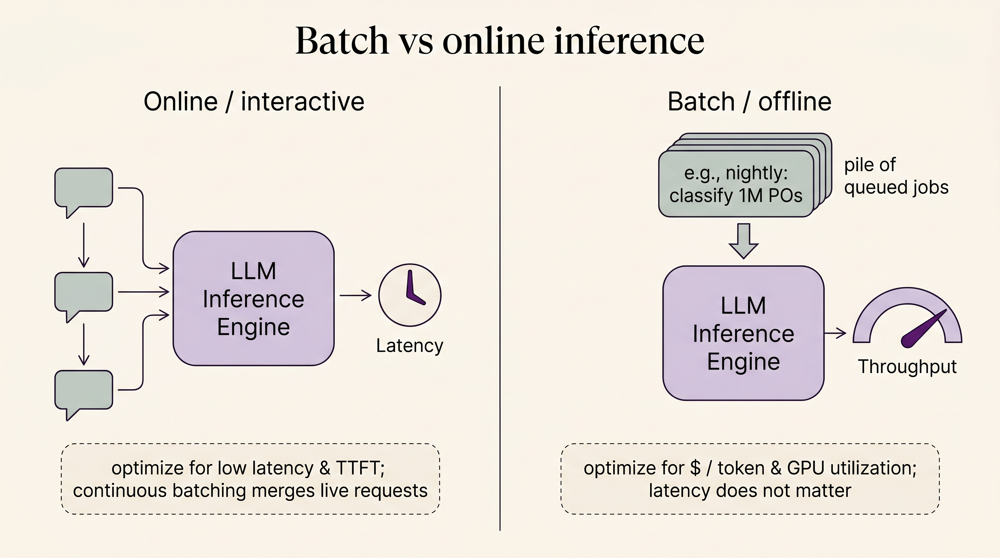
| Online / interactive | Batch / offline | |
|---|---|---|
| Example | The live PO chatbot | Nightly: classify 1M historical POs, bulk-extract fields from a year of invoices |
| Optimize for | Low latency, low TTFT | $ / token, GPU utilization |
| Batch size | Small, formed on the fly (continuous batching merges live requests token-by-token) | Huge — pack the GPU to the brim |
| Latency target | Milliseconds matter | Doesn't matter; throughput is king |
| Scaling | Warm pool, min_replicas ≥ 1 | Scale-to-zero between jobs is fine |
The lesson for students: the same weights serve both, but the serving configuration is completely different. Don't run your nightly bulk job on the latency-tuned online fleet, and don't make interactive users wait behind a giant batch.
Guardrails & output filtering
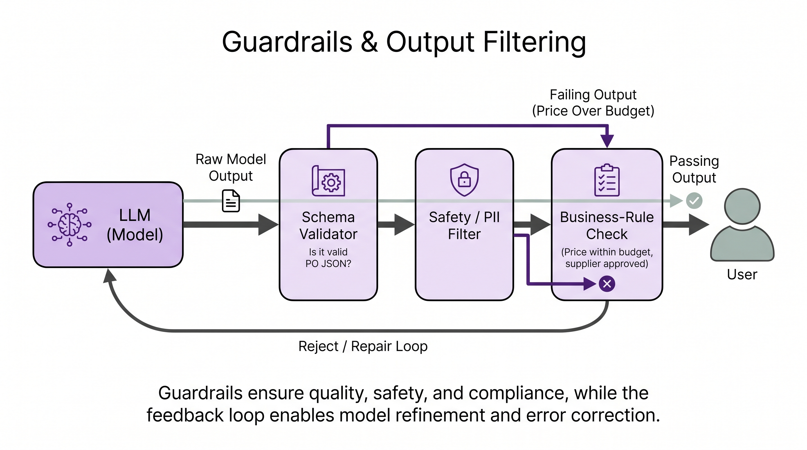
Decoding (§1) guarantees the JSON parses. It does not guarantee the values make business sense. Guardrails are the second wall:
Schema validator
Belt-and-suspenders re-check that the object matches po_schema even if decoding was unconstrained for some path.
Safety / PII filter
Strip or block leaked secrets, PII, prompt-injection echoes, or unsafe content before it's shown or stored.
Business-rule check
Is the supplier on the approved vendor list? Is the price within budget? Is the delivery date in the future? Rules the model can't be trusted to enforce.
Repair / re-ask loop
On failure, don't crash — feed the violation back (“price exceeds budget, ask the user to confirm”) and regenerate. Graceful degradation beats a broken form.
Stop making prefill and decode fight
Recall from §3 that a request has two phases with opposite bottlenecks: prefill is compute-bound and bursty, decode is memory-bandwidth-bound and steady. When they share the same GPU, they sabotage each other. Disaggregated inference splits them onto separate pools.
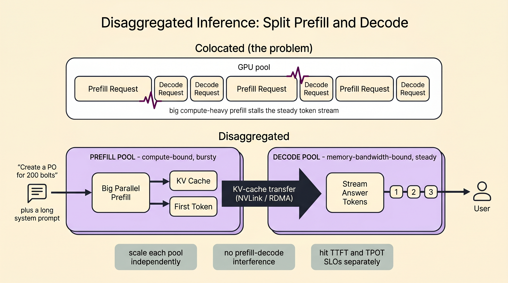
Why colocating them hurts
With plain continuous batching (vLLM's scheduler, §4), live prefills and decodes are merged into the same GPU step. A long prompt — our ERP system prompt + tool schema + the user's pasted email is easily 1–2k tokens — triggers a heavy prefill that monopolizes the GPU for a beat. Every other user's token stream stalls behind it. The symptom is the one users hate most: jittery, stuttering output and spiky tail latency, even when average throughput looks fine.
The disaggregated design
- Prefill poolGPUs tuned for throughput on big parallel matmuls. They ingest the prompt, build the KV cache, emit the first token (this is your TTFT), then hand off.
- KV-cache transferThe prompt's KV cache is moved to a decode worker over NVLink / NVLink-Switch / RDMA. The transfer must be fast enough that the handoff doesn't eat the latency you just saved.
- Decode poolGPUs tuned for memory bandwidth and large decode batches. They own the token-by-token stream (your TPOT) without any prefill ever barging in.
Scale each pool on its own SLO
Long prompts, short answers (summarize an invoice) → add prefill GPUs. Short prompts, long answers (draft a vendor email) → add decode GPUs. No more one-size compromise.
TTFT and TPOT stop trading off
A burst of heavy prefills can't stutter anyone's stream, because decode lives on different silicon. You hit both latency SLOs at once.
Tune hardware per phase
You can even use different GPU types or parallelism configs — e.g. heavier TP on prefill, bigger batches on decode — since the phases no longer share a worker.
Disaggregation shines at scale and with skewed prompt/output lengths — exactly the ERP case, where prompts are long (system prompt + tables) but the structured form is short. It's the architecture behind systems like DistServe and Mooncake, and is increasingly a first-class mode in vLLM. The cost is real: you now operate two pools and a fast KV-transfer path. For a small single-node deployment, plain colocated continuous batching is simpler and fine — reach for disaggregation when prefill–decode interference actually shows up in your tail-latency numbers (which is why you profiled in §3).
Design a low-latency, high-throughput LLM inference system
Now we can answer the question a student should be able to whiteboard. The trick is to refuse to answer it as one question — and instead reason in three layers: runtime, tooling, and infra.
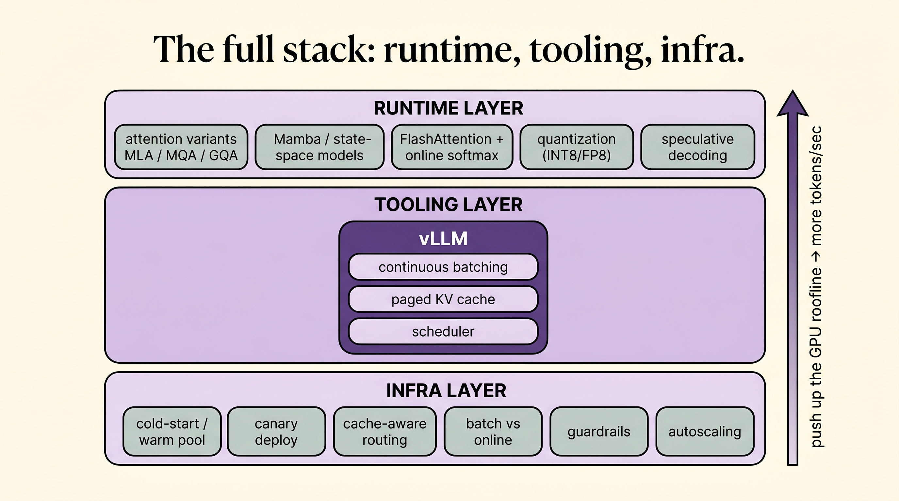
Runtime layer — push up the GPU roofline
This is where you make a single GPU do more useful work per second. Almost everything here is about the same enemy: decode is memory-bandwidth-bound, so you either move less data or do more math per byte moved.
MQA · GQA · MLA
The KV cache is the bandwidth hog. Multi-Query and Grouped-Query Attention let many query heads share a few key/value heads — shrinking the KV cache dramatically. Multi-head Latent Attention (MLA) compresses KV into a low-rank latent. Smaller KV → bigger batches → more tokens/sec.
Mamba / state-space models
SSMs replace quadratic attention with a recurrent state of fixed size — no KV cache that grows with sequence length. Promising for very long contexts where attention's memory blows up.
FlashAttention + online softmax
FlashAttention fuses attention into one kernel that never materializes the full N×N score matrix, computing softmax online in a single streaming pass. Less HBM traffic, less memory, faster prefill.
Quantization
Serve weights (and sometimes KV cache / activations) in INT8 / FP8 / INT4 instead of FP16. Fewer bytes to move per token directly attacks the decode bottleneck — and the model fits on fewer GPUs. Gate every quantization on the §2 harness.
Speculative decoding
A small draft model proposes several tokens; the big model verifies them in one parallel pass. When the draft is right, you get multiple tokens for the price of one step — big TPOT wins with identical output quality.
TP · PP · DP
Tensor parallelism for single-request latency, pipeline parallelism to span layers across nodes, data parallelism for throughput. These are the levers from §3, now seen as runtime knobs.
Tooling layer — vLLM
The runtime tricks are useless if the server schedules work badly. The tooling layer is the inference engine that turns raw GPU capability into served tokens — and the reference answer is vLLM:
PagedAttention
KV cache managed in pages like virtual memory — near-zero fragmentation, so you fit far more concurrent sequences in the same VRAM.
Continuous batching
New requests join the running batch token-by-token instead of waiting for a batch to drain. Keeps the GPU saturated → high throughput without wrecking latency.
Prefix caching + guided decoding
Automatic prefix-cache reuse (§4) and built-in JSON-schema/grammar decoding (§1) — the engine implements the steering and caching we designed.
Infra layer — keep the fleet warm, safe, routed
Finally, the layer from §4 — the operational reality that surrounds the engine:
Warm pools & autoscaling
No cold starts for interactive traffic; pre-scale ahead of demand; scale-to-zero only for batch.
Canary deploys
Ship behind an eval-gated traffic split; promote or roll back automatically.
Cache-aware routing
Route by prefix and session so shared context is computed once and conversations stay cache-hot.
Batch vs online split
Separate fleets and configs for interactive vs bulk; never mix their latency goals.
Disaggregated prefill / decode
At scale, split the two phases onto separate pools (§5) so TTFT and TPOT stop trading off.
Guardrails & filtering
Validate, filter, enforce business rules, and repair before output reaches the user.
Evals & observability
The harness from §2 running continuously on replayed traffic — the gate every other infra decision leans on.
Walk it back through the chatbot. A user says “create a PO for 200 bolts.” The request lands on a warm vLLM replica (infra) chosen by a cache-aware router so the system-prompt prefix is already cached (infra + tooling). The engine runs continuous batching with a quantized, GQA model and speculative decoding for low TPOT (tooling + runtime). Guided decoding forces a valid PO form (steering), guardrails check the business rules (infra), and — because the prompt is long but the form is short — prefill runs on a disaggregated pool so no one's token stream stutters (infra). The whole version was promoted only because it passed an eval-gated canary (evals + infra). Low latency and high throughput aren't one trick — they're every layer doing its job.